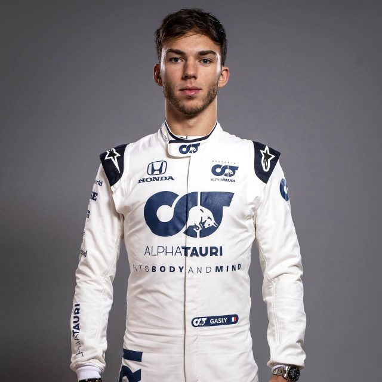
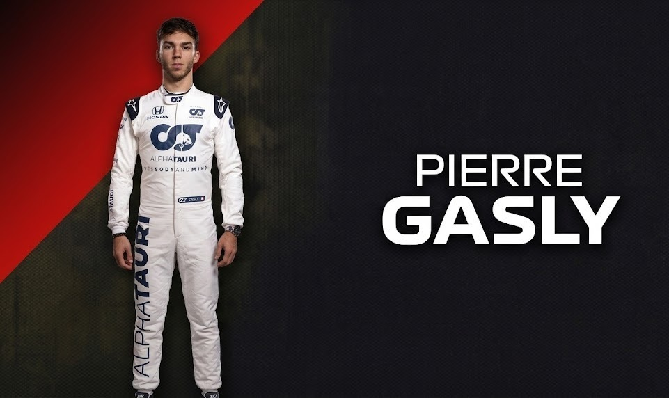
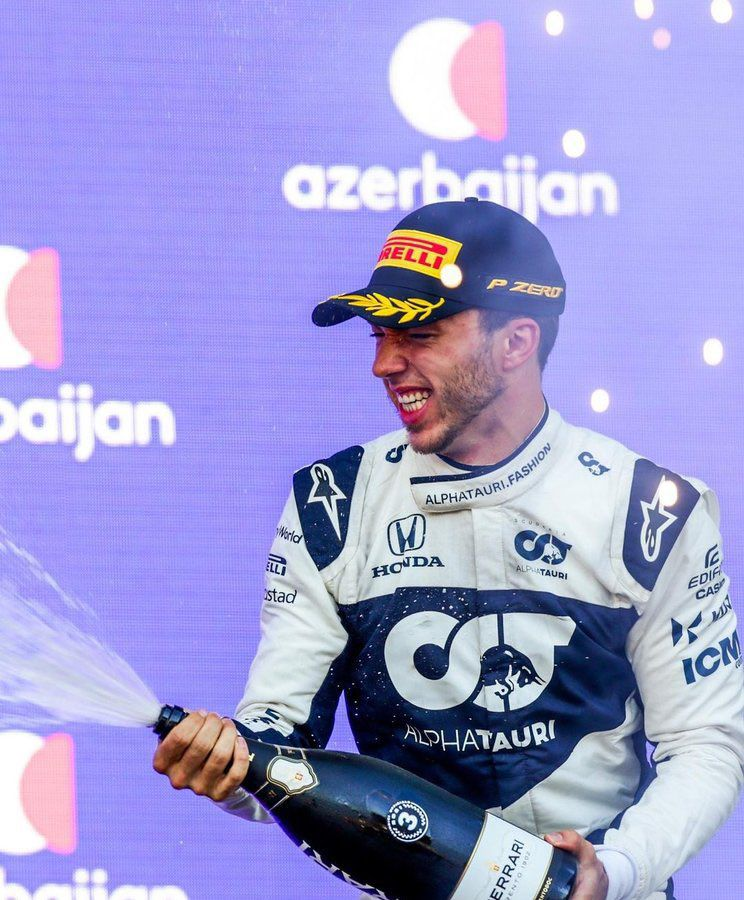
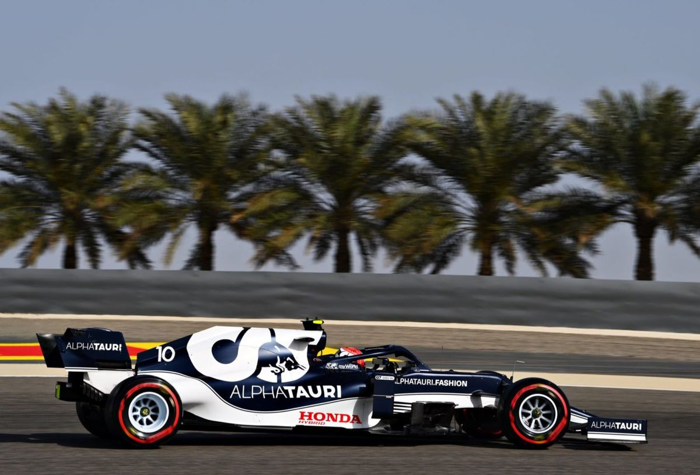

DRIVER PRESENTATION

Consolidación Técnica y Liderazgo Estratégico de Pierre Gasly en el Proyecto AlphaTauri
Pierre Gasly inició su formación en el karting internacional (2006), destacando por una velocidad pura que lo llevó a ganar la GP2 Series en 2016. Su trayectoria en Fórmula 1 ha estado marcada por una resiliencia ejemplar; tras un breve paso por Red Bull Racing, regresó a Toro Rosso/AlphaTauri para convertirse en el líder absoluto de la estructura italiana. Su victoria histórica en Monza 2020 y su consistencia durante el ciclo 2021 lo posicionaron como uno de los pilotos más efectivos de la zona media, destacando por sus actuaciones en clasificación y su gestión impecable del ritmo de carrera. Gasly ha demostrado una capacidad única para extraer el máximo potencial técnico de su monoplaza, consolidando su estatus como un piloto de élite capaz de luchar por los puestos de vanguardia de forma recurrente.

La redención de Pierre: Una victoria inolvidable con AlphaTauri en el "Templo de la Velocidad".

Su primer podio en F1, logrando un segundo puesto épico tras un duelo rueda a rueda con Hamilton en la recta final.
Otra actuación estelar de Gasly, logrando un tercer puesto muy luchado que reafirmó su estatus de piloto top.